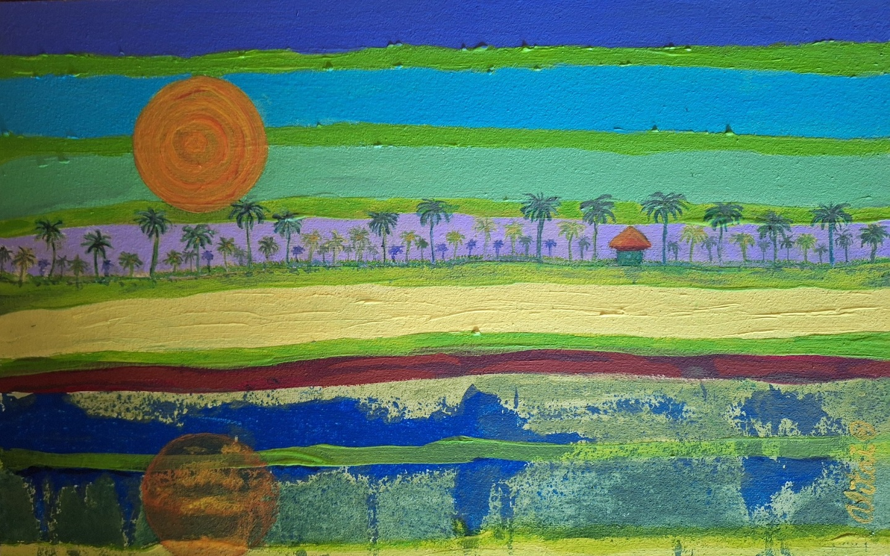

Reflejo Urbano
DM 26x38cm – Acrílico/ Año 2025
La ciudad se desvanece en la distancia y desde el agua se vuelve espíritu.
La ciudad, un eco, un signo que se desvanece a la distancia.

El Horizonte como Reflejo
DM 23x35cm – Acrílico/ Año 2025
Un horizonte que no se detiene: franjas de color que laten como el mar, como la memoria.
Entre ellas, una hilera de palmeras se multiplica en reflejos, apenas un signo de paisaje,
un eco de lo que fue, de lo que vibra todavía.
Aquí lo visible se disuelve en capas, y cada trazo es un espejo donde la mirada
se encuentra con su propio reflejo.
Ciudad Líquida
DM 23x35cm – Acrílico/ Año 2025
Ciudad líquida señala un estado de inmersión para tomar conciencia del entorno.
La neutralidad del paisaje desaparece con la mirada del viajero que mira y
el artista que reconstruye y resignifica el mundo.
Velero Lunar
DM 23x36cm – Acrílico/ Año 2025
(PROXIMAMENTE)
Tres Almas de Viento
DM 23x36cm – Acrílico/ Año 2025
(PROXIMAMENTE)